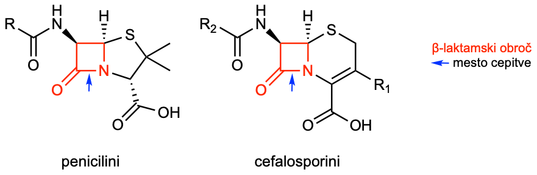
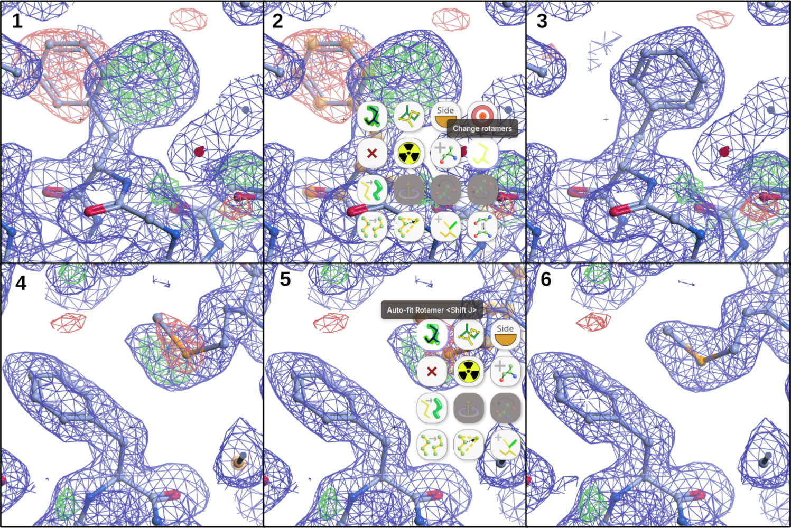

Gradnja modela strukture z uporabo elektronske gostote#
Namen#
Namen delavnice je spoznati osnove ročne gradnje in piljenja modela strukture proteina z uporabo eksperimentalnih podatkov, v konkretnem primeru gre za elektronsko gostoto, izračunano iz difrakcijskih podatkov (makromolekulska X-žarkovna kristalografija), podobni principi pa veljajo tudi v primeru elektronske difrakcije in krio-elektronske mikroskopije.
Pri delu bomo uporabljali program Moorhen, ki predstavlja spletno različico programa COOT (Crystallographic Object-Oriented Toolkit), danes najpogosteje uporabljanega programa za gradnjo, piljenje in validacijo modelov struktur makromolekul [Emsley et al., 2010]. Isti program se lahko uporablja tako za gradnjo modelov struktur na osnovi podatkov, pridobljenih z difrakcijo (rentgenska, elektronska difrakcija), kot tudi s krio-elektronsko mikroskopijo.
Vaša naloga#
Z uporabo Morheen dogradite in izboljšajte model strukture \(\beta\)-laktamaze KPC-2 z vezanim inhibitorjem avibaktamom, pri tem pa uporabite karto elektronske gostote, izračunano na osnovi difrakcijskih podatkov (ločljivost 1,8 Å).
‘Dogradite’ pomeni, da v trenutnem modelu strukure nekateri deli (aminokislinski ostanki, ligandi, …) manjkajo in jih morate dodati, ‘izboljšajte’ pa, da prilagodite koordinate dodatnih ter v modelu že prisotnih atomov/ostankov tako, da bodo kar se da skladni z eksperimentalnimi podatki (elektronska gostota) kot tudi stereokemijskimi parametri (Ramachandranov diagram, dolžine vezi, koti med vezmi, rotameri itd.) in bo končen model imel tudi kemijski smisel.
Na koncu vaš dograjen in izboljšan model primerjajte z izpiljenim modelom strukture, deponiranim v zbirko PDB.
Gradnjo in ročno piljenje modela ponovite z uporabo karte elektronske gostote pri nižji ločljivosti (3,5 Å) ter primerjajte, kako sedaj razločite orientacije stranskih skupin, manjkajoče dele ipd.
Postavimo protein v kontekst (nekaj o KPC-2)#
Splošno o \(\beta\)-laktamazah#
\(\beta\)-laktamaze so bakterijski encimi, ki s hidrolizo odprejo \(\beta\)-laktamski obroč antibiotikov in jih tako inaktivirajo. S tem preprečijo, da bi antibiotiki zavirali sintezo bakterijske celične stene, zato so pomemben vzrok odpornosti proti penicilinom, cefalosporinom in drugim \(\beta\)-laktamskim antibiotikom (več: Betalaktamski_antibiotik @ Wikipedia).

Po Amblerjevi klasifikaciji jih delimo v štiri razrede, A, B, C in D: razredi A, C in D imajo v aktivnem mestu katalitični serin, razred B pa obsega metalo-\(\beta\)-laktamaze, ki za delovanje potrebujejo cinkove ione. Med značilne predstavnike sodijo encimi TEM, SHV, CTX-M in KPC v razredu A, NDM, VIM in IMP v razredu B, AmpC v razredu C ter encimi OXA v razredu D. Posebej problematične so \(\beta\)-laktamaze razširjenega spektra (Extended-Spectrum Beta-Lactamases, ESBL) in karbapenemaze, saj zmanjšujejo izbor učinkovitih antibiotikov, njihovi geni pa se lahko med bakterijami širijo s plazmidi.
Njihovo delovanje lahko obidemo s kombiniranjem \(\beta\)-laktamskega antibiotika z zaviralcem (inhibitorjem) \(\beta\)-laktamaz, ki antibiotik zaščiti pred encimsko razgradnjo. Klasični primeri so amoksicilin s klavulansko kislino, ampicilin s sulbaktamom in piperacilin s tazobaktamom, pri čemer ti zaviralci delujejo predvsem proti številnim encimom razreda A. Novejše kombinacije vključujejo ceftazidim z avibaktamom, meropenem z vaborbaktamom in imipenem z relebaktamom, ki omogočajo zaščito tudi pred nekaterimi \(\beta\)-laktamazami, odpornimi proti starejšim zaviralcem. Avibaktam zavira številne encime razredov A in C ter nekatere razreda D, vaborbaktam in relebaktam pa predvsem encime razredov A in C; nobeden od teh treh zaviralcev ne zavira metalo-\(\beta\)-laktamaz razreda B. Pri bakterijah z metalo-\(\beta\)-laktamazami je uporabna kombinacija aztreonama z avibaktamom, saj je aztreonam praviloma odporen proti hidrolizi s temi encimi, avibaktam pa ga zaščiti pred drugimi \(\beta\)-laktamazami, ki jih bakterija lahko proizvaja hkrati.
KPC-2#
KPC-2 (Klebsiella pneumoniae karbapenemaza tipa 2) je serinska \(\beta\)-laktamaza razreda A, ki hidrolizira številne \(\beta\)-laktamske antibiotike, vključno s karbapenemi, in tako bakterijam omogoča odpornost tudi proti tem pomembnim zdravilom. Avibaktam jo zavira tako, da s katalitičnim serinom v njenem aktivnem mestu tvori reverzibilno kovalentno vez in prepreči razgradnjo antibiotika. Kombinacija ceftazidima z avibaktamom je pomembna možnost zdravljenja okužb z bakterijami, ki proizvajajo KPC-2, saj hkratna administracija omogoča učinkovito delovanje ceftazidima. Težavo lahko predstavljajo mutacije KPC-2, ki zmanjšajo občutljivost za avibaktam in povzročijo odpornost tudi proti tej kombinaciji. Razumevanje podrobnosti vezave avibaktama na KPC-2 je tako pomembno z vidika načrtovanja novih tovrstnih inhibitorjev.
Vhodni podatki#
Protein#
Gre za encim KPC-2 iz Klebsiella pneumoniae (UniProt Q9F663), rekombinantno pripravljen v Escherichia coli. Za izražanje je bila uporabljena nekoliko skrajšana oblika proteina z naslednjim aminokislinskim zaporedjem:
TNLVAEPFAKLEQDFGGSIGVYAMDTGSGATVSYRAEERFPLCSSFKGFLAAAVLARSQQ
QAGLLDTPIRYGKNALVPWSPISEKYLTTGMTVAELSAAAVQYSDNAAANLLLKELGGPA
GLTAFMRSIGDTTFRLDRWELELNSAIPGDARDTSSPRAVTESLQKLTLGSALAAPQRQQ
FVDWLKGNTTGNHRIRAAVPADWAVGDKTGTCGVYGTANDYAVVWPTGRAPIVLAVYTRA
PNKDDKHSEAVIAAAARLALEGLG
Kristalizacija in ligand#
Protein je bil kristaliziran z uporabo metode z difuzijo vodne pare na način sedeče kapljice, raztopina rezervoarja je imela naslednjo sestavo: 20 % (w/v) PEG 6000, 100 mM kalijev tiocianat, 100 mM citrat pH 4,0. Dobljeni kristali so bili inkubirani 8 min v raztopini avibaktama (koncentracija 5 mM) v nekoliko spremenjeni matični raztopini (25 % PEG 6000, 100 mM citrat pH 5.0, 20 % etilen glikol), nato pa zamrznjeni v tekočem dušiku.
Kemijsko ime za avibaktam je (2S,5R)-1-formil-5-[(sulfooksi)amino]piperidin-2-karboksamid, najdemo ga v zbirki ligandov na RCSB PDB (koda NXL).
Difrakcijski podatki in začetni model#
Difrakcijski podatki so bili posneti pod krio-pogoji, sprocesirani (prostorska skupina \(P 2_1 2_1 2_1\)), za faziranje z molekulsko zamenjavo (molecular replacement) pa je bila uporabljena znana (eksperimentalno določena) struktura podobne \(\beta\)-laktamaze. Po molekulski zamenjavi je bil ta začetni model uporabljen za začetno gradnjo modela strukture KPC-2. V asimetrični enoti je ena molekula proteina, KPC-2 pa je sicer znan kot monomeren protein.
Gradnja modela#
Karta pri visoki ločljivosti (1,8 Å)#
Pri “popravljanju” modela strukture bomo najprej uporabili karto visoke ločljivosti, izračunano na podlagi vseh eksperimentalnih podatkov.
Datoteke:
delno zgrajen model strukture: KPC2avi.pdb,
elektronska gostota (karti \(2mF_o – DF_c\) in \(mF_o – DF_c\), v datoteki so tudi strukturni faktorji, ločljivost 1,8 Å): KPC2avi_1p8.mtz.
Kaj so oznake \(F_o\), \(DF_c\) …?
\(F_o\) se nanaša na eksperimentalno določene amplitude
\(DF_c\) se nanaša na amplitude, izračunane iz modela strukture
\(m\) uteži prispevek \(F_o\) glede na negotovost faz
\(D\) prilagodi prispevek \(DF_c\) glede na ocenjeno napako modela
Pojdite na spletno stran Moorhen.org.
Naložite PDB (koordinate) in MTZ datoteki (strukturni faktorji, karte elektronske gostote) (
"hamburger menu" > File > Open Files), prenešeni s te spletne strani.Datoteki lahko naložite hkrati (obe označite pri odpiranju) ali pa eno za drugo.
Oglejte si, kako se elektronska gostota nadaljuje “v neskončnost”.
Omogočite izračun R-faktorja in osveževanje kart elektronske gostote tako, da naložene karte in podatke povežete s strukturo:
File > Connect Molecule and Maps... > OkSpremenite prikaz proteina iz načina ‘Ribbons’ v ‘Bonds’ (sicer ne vidite posameznih ostankov):
Models> ikona svinčnika…Vklopite prikaz atomov iz sosednjih asimetričnih enot:
Models > (zobnik) > Cell and Symmetry > Show symmetry mates.Nastavite nivo konturiranja diferenčne karte elektronske gostote (\(mF_o – DF_c\)) na pribl. RMSD 3,4–3,5:
Maps, uporabite drsnik pri karti KPC2avi.-map-1.Z orodji, ki jih najdete pod
Validation, analizirajte ujemanje modela strukture z elektronsko gostoto in stereokemijskimi parametri, na primer:Difference Map Peaks...vam pokaže, kje v strukturi nekaj manjka (zeleno obarvana diferenčna karta el. gostote) oz. je tam, kjer ne bi smelo biti (rdeče obarvana diferenčna karta el. gostote)),Ramachandran Plot...vam pokaže, kateri ostanki so izven favoriziranih in dovoljenih območij kombinacij dihedralnih kotov glavne verige,Unmodelled Blobs...vam poišče “oblačke” elektronske gostote, ki niso zapolnjeni z atomi (torej v modelu strukuture tam nekaj manjka),idr.
Nekaj napak v strukturi vam razkrije že vklop “Ramachandran Balls” in “Contact Dots” (s slednjim lahko identificirate atome, ki sicer niso kovalentno povezavi, so si pa preblizu):
Models > Tools > (različne možnosti).
Zbiranje Moorhen točk
Ko naredite spremembo v modelu strukture, ki izboljša ujemanje z eksperimentalnimi podatki, se zniža vrednost \(R_work\), pridobite pa Moorhen points.
Vmesno shranjevanje koordinat
Priporočeno je, da med delom občasno shranite koordinate ali kar celotno sejo, saj boste vse popravke izgubili, če se vam brskalnik sesuje ali ga po nesreči zaprete!
V model strukture dodajte tudi manjkajoča liganda – eden izmed njih je komponenta kristalizacijskega pufra (jo lahko prepoznate po obliki oblačka elektronske gostote?), drugi pa inhibitor encima.
Ko boste z delom končali shranite koordinate popravljenega modela strukture in ga primerjajte (npr. preko vrednosti RMSD) z v zbirko PDB deponiranimi koordinatami: KPC2avi_orig_clean.pdb.
Za superpozicijo lahko uporabite PDB Pairwise Structure Alignment (pri simbolu smetnjaka kliknite na puščico in izberite
File Upload; kot referenčno strukturo lahko vpišete kar koto PDB 4ZBE) ali pa UCSG ChimeraX.
Kaj sledi ročni gradnji modela?
V praksi bi tej ročni gradnji in piljenju modela strukture (model building and refinement) sledili cikli avtomatskega piljenja, kjer se prilagajajo položaji atomov, njihovi parametri (B-faktorji, zasedenost), tako da se model čim bolje ujema z eksperimentalnimi podatki in hkrati ohranja smiselno geometrijo (Ramachandranov diagram, dolžine vezi, koti, …). Nato se izračunajo nove karte elektronske gostote, vendar postopek praviloma ne odpravi vseh večjih napak in ne zgradi manjkajočih delov strukture, zato je potrebno tudi ročno preverjanje in popravljanje modela. Torej, spet bi sledil cikel ročnega piljenja, nato spet avtomatsko piljenje … dokler se parametri piljenja (med drugim tudi faktorja \(R\) in \(R_{free}\)) ne stabilizirajo in dosežejo ustreznih vrednosti.
Primer popravljanja modela strukture#
Na spodnji sliki so je prikazan primer popravljanja modela strukture. Karta elektronske gostote \(2mF_o – DF_c\) je prikazana modro, diferenčna karta elektronske gostote \(mF_o – DF_c\) pa zeleno (pozitivna gostota = nekaj manjka v modelu strukture na tem mestu) oz. rdeče (negativna gostota = na tem mestu je v modelu strukture nekaj, za kar ni eksperimentalnih podatkov).
Prikazani so koraki:
Iz elektronske gostote (tako \(2mF_o – DF_c\) kot tudi \(mF_o – DF_c\)) je jasno razvidno, da je stranska skupina fenilalaninskega ostanka napačno pozicionirana. Gre za napačen rotamer.
Boljši rotamer izberemo preko možnosti
Change rotamers, to orodje že samo izbere najprimernejši rotamer in ga…… umesti v elektronsko gostoto (po potrebi lahko naredimo še prileganje v elektronsko gostoto posebej, glejte korak spodaj za metioninski ostanek). Ob tem se nam karta \(mF_o – DF_c\) avtomatsko osveži (seveda le, če smo omogočili izračun R-faktorja in osveževanje kart elektronske gostote).
Ogled bližine tega ostanka razkrije še eno napako in sicer slabo pozicionirano stransko skupino metioninskega ostanka.
Uporabimo orodje
Auto-fit Rotamer, ki izbere drug rotamer stranske skupine in ga umesti tako, da …… se dobro prilega elektronski gostoti. Spet, avtomatsko osvežena karta \(mF_o – DF_c\) ne kaže na nobene anomalije.

Karta pri nizki ločljivosti (3.5 Å)#
Za ilustracijo, kaj pomeni slaba ločljivost, (delno) ponovite popravljanje modela strukture – uporabite isti začetni delno zgrajen model strukture kot pri visoki ločljivosti, le datoteka s kartami elektronske gostote je druga. Vsi ostali koraki so enaki kot prej.
Datoteke:
delno zgrajen model strukture: KPC2avi.pdb (to je ista datoteka kot pri visoki ločljivosti),
elektronska gostota (karti \(2mF_o – DF_c\) in \(mF_o – DF_c\), pa tudi strukturni faktorji; odrezano pri ločljivosti 3,5 Å): KPC2avi_3p5.mtz.
Opomba
Z omejitvijo podatkov z 1,8 Å na 3,5 Å zgolj ponazorimo izgubo strukturnih podrobnosti, ne posnemamo pa v celoti eksperimenta s kristalom, ki uklanja le do 3,5 Å. Pri tem postopku odstranimo reflekse z medravninskimi razdaljami, manjšimi od 3,5 Å. Ti prispevajo informacije o finejših podrobnostih strukture. Preostale izmerjene amplitude in njihove negotovosti ostanejo nespremenjene. Tako lahko naši omejeni podatki dajejo čistejšo karto kot dejanski podatki z mejno ločljivostjo 3,5 Å. Poleg tega uporabljamo model, ki je bil prvotno določen pri 1,8 Å in zato že vsebuje natančne strukturne informacije. Ker model prispeva faze za izračun kart, je vaja lažja od določanja strukture zgolj iz podatkov pri 3,5 Å. Postopek torej ponazarja izgubo podrobnosti zaradi omejitve ločljivosti, ne pa vseh težav dejanskega eksperimenta pri nižji ločljivosti.
Vprašanja za v razmislek#
Vpliv ločljivosti: Katere napake v modelu strukture lahko zanesljivo prepoznate in popravite pri 1,8 Å, pri 3,5 Å pa ne?
Rotameri: Kako s kartama \(2mF_o – DF_c\) in \(mF_o – DF_c\) prepoznate napačen rotamer? Kako prispeva okolica (bližnji ostanki in/ali ogrodje) k izbiri rotamera oz. umestitvi ostanka v elektronsko gostoto?
Disulfidna vez: Kateri podatki podpirajo obstoj disulfidne vezi med dvema cisteinskima ostankoma?
Manjkajoči deli verige: Kako določite potek in zaporedno umestitev manjkajočega odseka polipeptidne verige? Kdaj je bolje odsek pustiti nemodeliran, namesto da ga zgradite na podlagi pričakovane strukture?
Alternativne konformacije: Kako razlikujete dve alternativni konformaciji ostanka od ene napačno postavljene konformacije ali šuma? Kako bi določili njuni zasedenosti in zakaj je takšna interpretacija pri 3,5 Å težja?
Identiteta ligandov: Kako presodite, ali gostota pripada komponenti kristalizacijskega pufra ali inhibitorju encima? Upoštevajte obliko gostote, kemijsko okolje in stike s proteinom. Ali poznavanje sestave vzorca samo po sebi dokazuje identiteto liganda?
Preverjanje popravkov: Kako boste po ponovnem izboljševanju modela preverili, ali so bili vaši popravki upravičeni? Zakaj samo znižanje \(R_{work}\) ne zadošča in kako pri presoji uporabite \(R_{free}\), geometrijo ter preostalo diferenčno gostoto?
Komentar: V vašem primeru sta \(R_{work}\) in \(R_{free}\) enaka zaradi neupoštevanja oznak v naloženih datotekah.
Viri#
Za pripravo datotek za vaje so bili uporabljeno javno dostopni podatki iz članka Inhibition of Klebsiella beta-Lactamases (SHV-1 and KPC-2) by Avibactam: A Structural Study [Krishnan et al., 2015].
Pri pripravi datotek so bili uporabljeni programi: